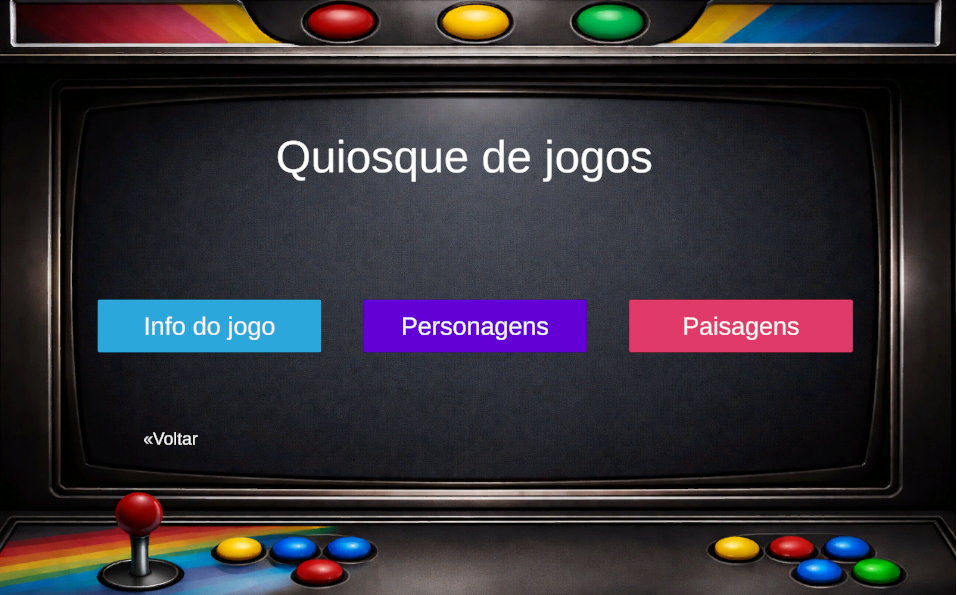
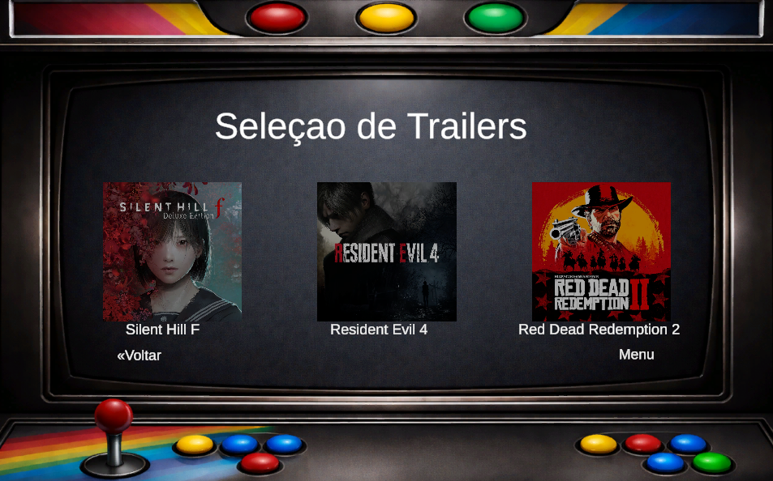
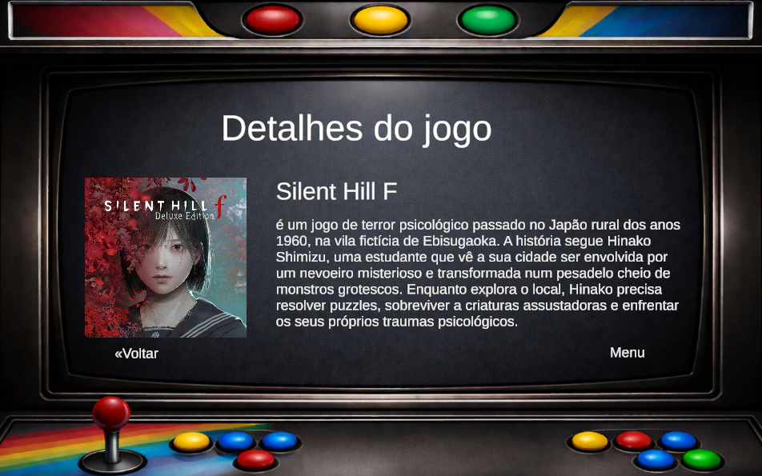

O principal objetivo deste projeto foi desenvolver uma aplicação interativa inspirada em espaços de videojogos retro dos anos 90, proporcionando uma experiência nostálgica e intuitiva ao utilizador.
A aplicação permite explorar diferentes categorias de jogos, visualizar informações detalhadas e navegar por uma interface visualmente apelativa e interativa.
O conceito surgiu através de brainstorming em grupo, onde foram exploradas diferentes ideias até chegar ao tema retro inspirado na estética das antigas maquinas de jogos dos anos 90.
O foco do projeto foi criar uma experiência visual imersiva, utilizando elementos gráficos apelativos, organização intuitiva e interatividade para envolver o utilizador.



Tive um papel ativo no desenvolvimento do projeto, contribuindo para a idealização do conceito, design visual, organização da interface e implementação geral da aplicação.
Participei no desenvolvimento das funcionalidades, estrutura de navegação, apresentação visual e construção da experiência interativa do utilizador, garantindo uma aplicação intuitiva e apelativa.